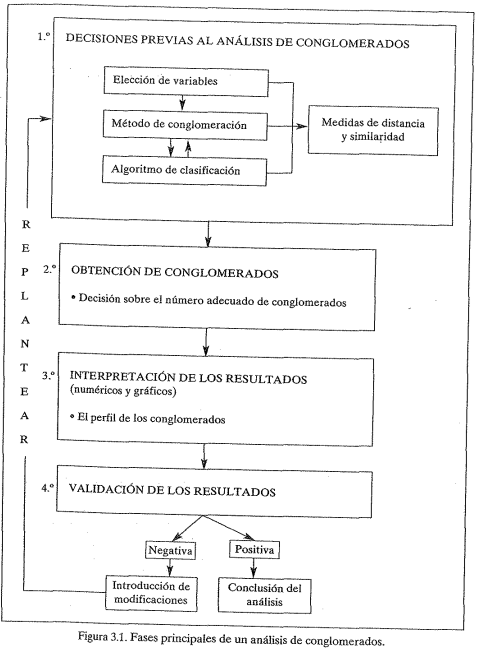
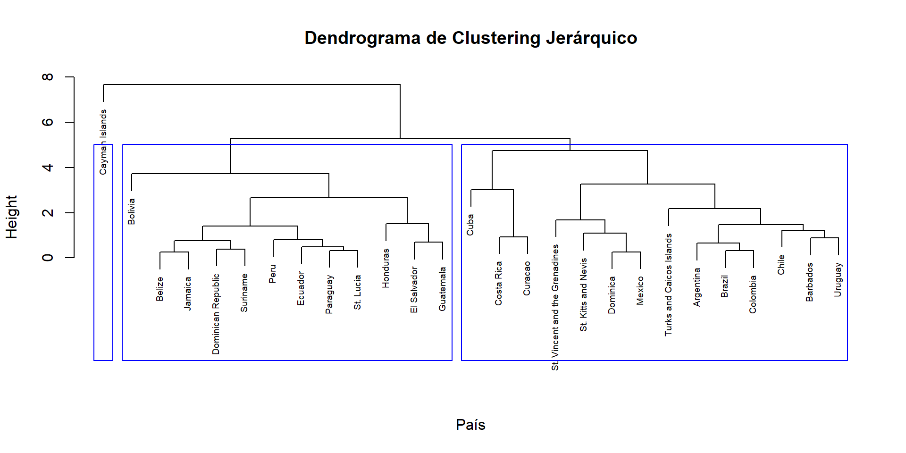
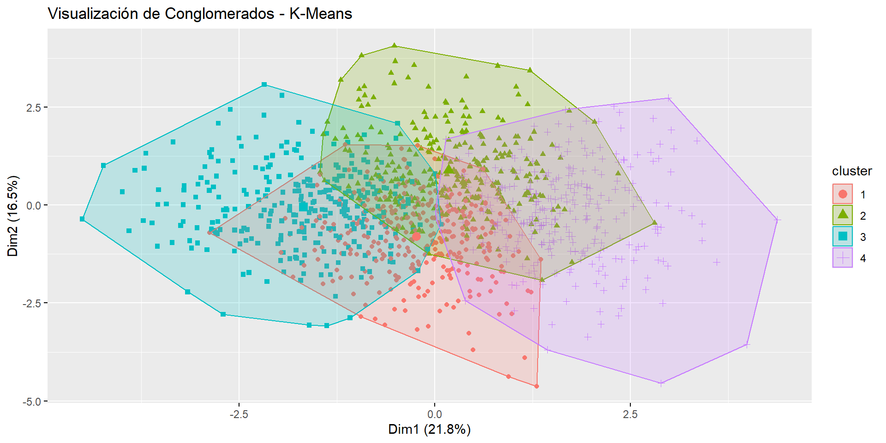
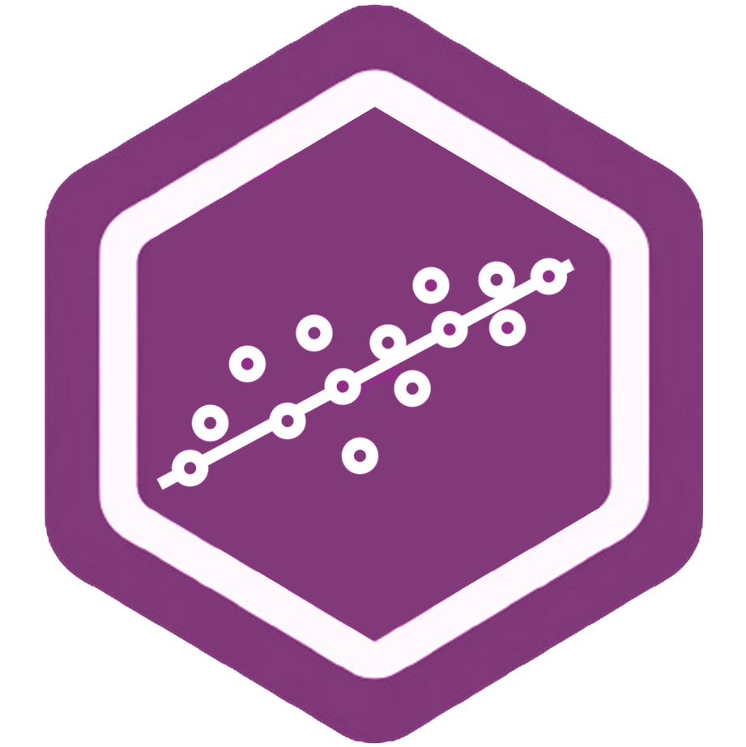

package 'WDI' successfully unpacked and MD5 sums checked
The downloaded binary packages are in
C:\Users\gsotomayor\AppData\Local\Temp\RtmpAdeLjZ\downloaded_packagesAnálisis Avanzado de Datos
En el análisis multivariable, las técnicas se pueden clasificar en técnicas de dependencia y técnicas de interdependencia. La selección de la técnica adecuada depende de la naturaleza de la pregunta de investigación y la relación entre las variables.
Las técnicas de dependencia se utilizan cuando existe una clara distinción entre variables dependientes (o respuesta) y variables independientes (o predictoras). Es decir, hay una relación de dependencia que se quiere modelar y analizar. El objetivo principal de estas técnicas es estimar el efecto de las variables independientes sobre las dependientes.
Las técnicas de interdependencia se aplican cuando no existe una distinción clara entre variables dependientes e independientes, o no es necesario establecer una relación de dependencia. En lugar de eso, todas las variables se tratan de igual forma, y el objetivo es descubrir patrones o estructuras ocultas en los datos.
El análisis de conglomerados (o “cluster analysis”) es una técnica que se ubica dentro de las técnicas multivariables de clasificación. Su objetivo es agrupar datos en grupos llamados conglomerados, donde los integrantes de un conglomerado son lo más similares posibles entre sí y diferentes de los otros grupos.
El análisis de conglomerados se utiliza ampliamente en diferentes disciplinas debido a su capacidad para identificar estructuras ocultas dentro de los datos. Esta técnica se enfoca principalmente en la exploración de datos, sin tener hipótesis a priori sobre la estructura de los mismos.
En la ejecución de un análisis de conglomerados se siguen una serie de fases que pueden resumirse en los siguientes pasos:
Estas fases se pueden agrupar en cuatro bloques principales: selección de variables, procedimiento de conglomeración, interpretación de resultados, y validación de los hallazgos, que se repiten iterativamente hasta alcanzar una solución adecuada.

La elección de las variables es crucial ya que determina la calidad de la agrupación. Las decisiones deben basarse en la naturaleza de los datos y el objetivo de la investigación:
Los métodos jerárquicos son aquellos en los que los conglomerados se forman de manera jerárquica. Esto significa que el proceso de agrupamiento se realiza en una serie de pasos sucesivos, donde cada observación se va uniendo progresivamente a conglomerados más grandes, o conglomerados se van dividiendo en grupos más pequeños. Los métodos jerárquicos pueden ser aglomerativos o divisivos.
Los métodos no jerárquicos no siguen un proceso jerárquico de agrupamiento, sino que intentan dividir el conjunto de datos en un número predefinido de conglomerados. Estos métodos asignan iterativamente los datos a conglomerados con base en una medida de similitud, buscando optimizar la homogeneidad dentro de los conglomerados y la heterogeneidad entre ellos.
Las decisiones sobre cuáles objetos combinar para formar un conglomerado se basan en estas matrices.
Dependiendo del tipo de variables, se utilizan diferentes medidas para calcular las distancias o similaridades (por ejemplo, medidas euclidianas para variables continuas o coeficientes de Jaccard para datos binarios).
Tipos de Medidas:
La distancia euclidiana es la distancia “en línea recta” entre dos puntos en un espacio multidimensional, calculada como la generalización del Teorema de Pitágoras a n dimensiones. Se utiliza mayormente para variables continuas.
Fórmula Matemática: La distancia euclidiana entre dos objetos (i, j) se calcula como: \[ d_{ij} = \sqrt{\sum_{k=1}^{p} (x_{ik} - x_{jk})^2} \]
Propiedades:
¿Cuándo Estandarizar?: La estandarización de las variables es recomendable cuando las variables tienen diferentes unidades de medida o rangos significativamente distintos. Por ejemplo, si una variable está medida en ingresos anuales (en miles) y otra en edad (en años), la variable con valores más altos dominará el cálculo de la distancia.
Efecto de la Estandarización:
A la elección de la medida de similaridad o de distancia le sigue la obtención de la solución de conglomerados, en conformidad con las diversas decisiones adoptadas. Es decir, el método de conglomeración, el algoritmo de clasificación y la medida de similaridad o distancia. Antes de proceder a la interpretación de los resultados, se debe dirimir una cuestión crucial: la referente al número de conglomerados a retener entre las distintas alternativas posibles de clasificación de los objetos de interés.
En la conglomeración no jerárquica, la decisión sobre el número de conglomerados a retener es previa a la ejecución de cualquier análisis. En la conglomeración jerárquica, sin embargo, esta decisión se toma al final del análisis, una vez que todos los conglomerados han sido formados. De ahí que se incluya esta discusión en este apartado posterior a la exposición de decisiones clave previas al análisis de conglomerados.
La finalidad de todo análisis de conglomerados es la clasificación de una serie de objetos en conglomerados (o grupos) homogéneos. Pero, ¿cuántos conglomerados se requieren para describir de forma precisa la similitud y la diversidad en una población?
No existe una respuesta única para esta cuestión, pero existen varios procedimientos alternativos que se pueden aplicar para determinar el número idóneo de conglomerados:
Cuando se observan varias variaciones o “saltos” en los coeficientes, puede resultar difícil decidir cuál es relevante. Esta subjetividad es una crítica frecuente a los métodos de conglomeración jerárquica.
package 'WDI' successfully unpacked and MD5 sums checked
The downloaded binary packages are in
C:\Users\gsotomayor\AppData\Local\Temp\RtmpAdeLjZ\downloaded_packages Paso Cluster1 Cluster2 Altura
1 1 -3 -18 0.2485610
2 2 -12 -19 0.2601608
3 3 -5 -8 0.3169603
4 4 -20 -23 0.3212094
5 5 -13 -25 0.3884592
6 6 -14 4 0.4827039
7 7 -1 3 0.6495411
8 8 -15 -16 0.6940356
9 9 1 5 0.7502868
10 10 -21 6 0.7932228
11 11 -2 -27 0.8818523
12 12 -9 -11 0.9316617
13 13 -22 2 1.0855696
14 14 -7 11 1.2206725
15 15 9 10 1.4090858
16 16 7 14 1.4760672
17 17 -17 8 1.5051449
18 18 -24 13 1.6773069
19 19 -26 16 2.1755333
20 20 15 17 2.6491127 country conglomerado
2 Argentina 1
5 Barbados 1
6 Belize 2
7 Bolivia 2
8 Brazil 1
10 Cayman Islands 3
11 Chile 1
12 Colombia 1
13 Costa Rica 1
14 Cuba 1
15 Curacao 1
16 Dominica 1
17 Dominican Republic 2
18 Ecuador 2
19 El Salvador 2
21 Guatemala 2
24 Honduras 2
25 Jamaica 2
26 Mexico 1
29 Paraguay 2
| Conglomerado | Adopción Homoparental | Aborto | Rol del Estado en Educación | Capitalización Individual Pensiones | Restricciones Migratorias | Educación Sexual (Padres) | Restricción a Empresas Contaminantes | Gasto Social Focalizado | Cantidad de Individuos |
|---|---|---|---|---|---|---|---|---|---|
| 1 | 3.365796 | 2.000000 | 4.004751 | 2.546318 | 4.237530 | 2.382423 | 3.543943 | 2.703088 | 421 |
| 2 | 3.893424 | 2.909297 | 4.074830 | 3.682540 | 4.281179 | 3.977324 | 3.782313 | 3.698413 | 441 |
| 3 | 3.920981 | 4.152589 | 4.305177 | 2.629428 | 3.901907 | 2.258856 | 3.822888 | 2.795640 | 367 |
| 4 | 1.714286 | 1.864169 | 3.946136 | 3.252927 | 4.283372 | 3.950820 | 3.592506 | 3.407494 | 427 |
Df Sum Sq Mean Sq F value Pr(>F)
factor(conglomerado) 3 1298 432.6 696.6 <2e-16 ***
Residuals 1652 1026 0.6
---
Signif. codes: 0 '***' 0.001 '**' 0.01 '*' 0.05 '.' 0.1 ' ' 1 Df Sum Sq Mean Sq F value Pr(>F)
factor(conglomerado) 3 28.6 9.538 14.59 2.23e-09 ***
Residuals 1652 1080.1 0.654
---
Signif. codes: 0 '***' 0.001 '**' 0.01 '*' 0.05 '.' 0.1 ' ' 1
